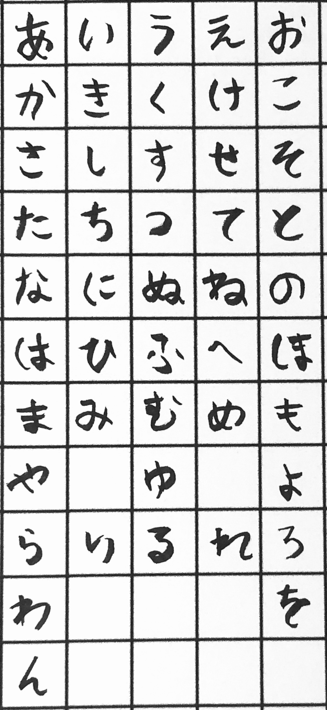

Learn Hiragana
あ a
い i
う u
え e
お o
か ka
き ki
く ku
け ke
こ ko
さ sa
し shi
す su
せ se
そ so
た ta
ち chi
つ tsu
て te
と to
な na
に ni
ぬ nu
ね ne
の no
は ha
ひ hi
ふ fu
へ he
ほ ho
ま ma
み mi
む mu
め me
も mo
や ya
ゆ yu
よ yo
ら ra
り ri
る ru
れ re
ろ ro
わ wa
を wo
ん n
